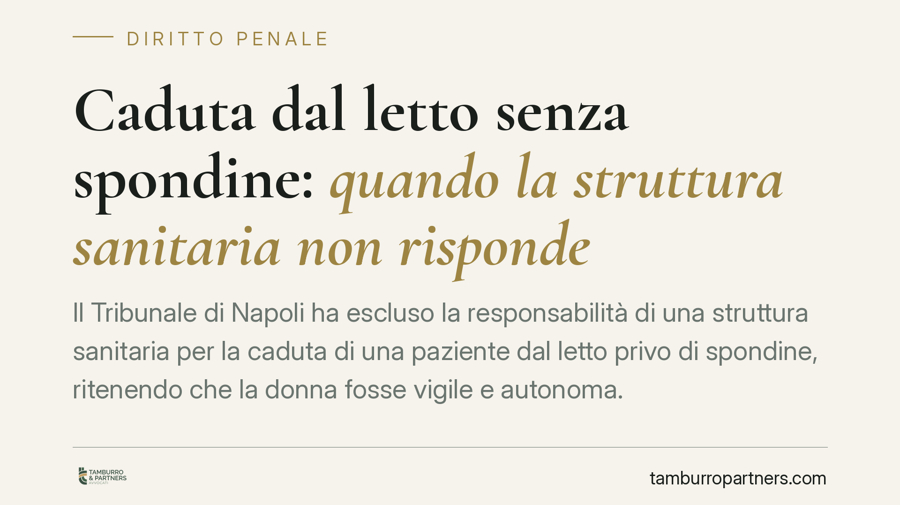

Caduta dal letto senza spondine: quando la struttura sanitaria non risponde
Il Tribunale di Napoli ha escluso la responsabilità di una struttura sanitaria per la caduta di una paziente dal letto privo di spondine, ritenendo che la donna fosse vigile e autonoma. La pronuncia si muove sul terreno della responsabilità civile da contratto di spedalità e ridefinisce l'estensione dell'obbligo di sorveglianza in base alle condizioni cliniche del ricoverato.

Nota di classificazione
Segnaliamo subito un punto rilevante: la vicenda è stata catalogata come diritto penale, ma la decisione del Tribunale di Napoli riguarda esclusivamente la responsabilità civile della struttura sanitaria. Il fondamento è il contratto di spedalità e la disciplina degli artt. 1218 e 1223 del codice civile. Nessun profilo penale (come le lesioni colpose ex art. 590 c.p.) risulta affrontato nella pronuncia.
La distinzione non è formale. In sede penale occorre accertare la colpa personale del singolo operatore e l'esistenza di una posizione di garanzia, cioè l'obbligo giuridico di impedire l'evento dannoso. In sede civile, invece, si valuta l'inadempimento della struttura rispetto agli obblighi assunti verso il paziente. La sentenza in commento opera solo su quest'ultimo piano.
Inquadramento normativo
Con il ricovero si perfeziona il cosiddetto contratto di spedalità (o di assistenza sanitaria): un contratto atipico con cui la struttura si obbliga non solo alle prestazioni mediche in senso stretto, ma anche a quelle accessorie di natura alberghiera, custodiale e di sicurezza. Da qui l'obbligo di sorveglianza sul paziente.
Questo obbligo, però, non è assoluto né uniforme. Si modula in funzione delle concrete condizioni cliniche del ricoverato. Un paziente disorientato, sedato o non autosufficiente richiede misure di protezione più intense; un paziente vigile, lucido e autonomo può muoversi con margini di libertà maggiori. È su questo criterio che si fonda l'esclusione di responsabilità: la caduta di una persona autonoma, in assenza di indicazioni cliniche che imponessero la contenzione o le spondine, non integra un inadempimento della struttura.
Va richiamato un ulteriore profilo. L'applicazione di spondine e mezzi di contenzione non è un gesto neutro: costituisce un atto sanitario che incide sulla libertà personale tutelata dall'art. 13 della Costituzione. Non può quindi essere disposto in via automatica o precauzionale, ma solo quando le condizioni cliniche lo giustificano e nel rispetto delle procedure previste. Contenere un paziente autonomo senza indicazione può essere di per sé illegittimo.
> Gli estremi esatti della pronuncia (sezione, numero e data di deposito) non risultano allo stato pubblicati in forma completa. Il riferimento va quindi inteso come espressione di un orientamento interpretativo e non come precedente vincolante. Si consiglia la consultazione del testo integrale prima di ogni utilizzo argomentativo.
Implicazioni pratiche
Per le strutture sanitarie il messaggio è chiaro: la responsabilità per caduta non discende dalla mera assenza delle spondine, ma dalla coerenza tra le misure adottate e il rischio effettivo del singolo paziente.
Diventa quindi centrale la documentazione. La cartella clinica deve dare conto delle condizioni del ricoverato, delle valutazioni effettuate e delle scelte assistenziali compiute. Le scale di valutazione del rischio caduta (come Conley o Morse) rappresentano lo strumento con cui si registra e si oggettivizza il livello di rischio: un paziente classificato a basso rischio non richiede contenzione, e questa classificazione, se tracciata, diventa la prova della correttezza della condotta.
Per il paziente e i familiari, sul versante opposto, la pronuncia ridimensiona l'aspettativa di un risarcimento automatico. Occorrerà dimostrare che le condizioni cliniche imponevano misure di protezione poi omesse, non semplicemente che una caduta si è verificata.
Cosa fare in concreto
- Documentate la valutazione del rischio caduta all'ingresso e a ogni variazione clinica, utilizzando scale validate e registrandone gli esiti in cartella.
- Motivate le scelte assistenziali: annotate perché spondine o contenzione sono state adottate o, al contrario, non ritenute necessarie.
- Non ricorrete alla contenzione in via precauzionale su pazienti autonomi: verificate sempre l'indicazione clinica e il rispetto delle procedure a tutela dell'art. 13 Cost.
- Conservate e aggiornate la cartella clinica in modo completo e leggibile: è il primo elemento di prova in caso di contenzioso.
- In caso di evento avverso, ricostruite tempestivamente la sequenza dei fatti e le condizioni del paziente al momento della caduta, prima che le informazioni si disperdano.
Contributo informativo a cura di Tamburro & Partners - Avv. Giuseppe Tamburro. Non costituisce parere legale.
Ogni condominio ha una storia a sé.
Se gestisci un'amministrazione e vuoi un confronto su una specifica questione condominiale, scrivi allo studio. Ti rispondiamo entro un giorno lavorativo.